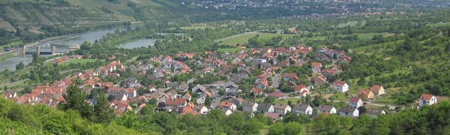
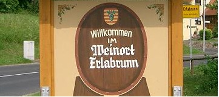
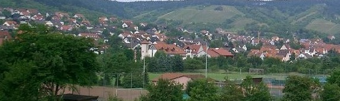

Genießen sie Erlabrunn!



Wir vermieten eine gemütliche, 50 m² große, liebevoll ausgestattete Ferienwohnung in sonniger und idyllischer Lage 100 Meter von den zwei großen Erlabrunner Badeseen entfernt. Die Wohnung liegt im Erdgeschoss und grenzt direkt an ihren Parkplatz (für max. 2 Fahrzeuge) und an einen Garten, der ebenfalls zur Ferienwohnung gehört.
Ein TV, sowie ein gemütliches Sofa und ein großes Bett gehören selbstverständlich genauso zur Ausstattung wie eine komplett ausgestattete Küche und ein Badezimmer.
Alle Fragen bezüglich der Wohnung beantworten wir ihnen natürlich gerne. Darüber hinaus stellen wir Ihnen diverse Auskünfte und Broschüren über Erlabrunn und die anderen Gegenden unserer Heimat zur Verfügung.